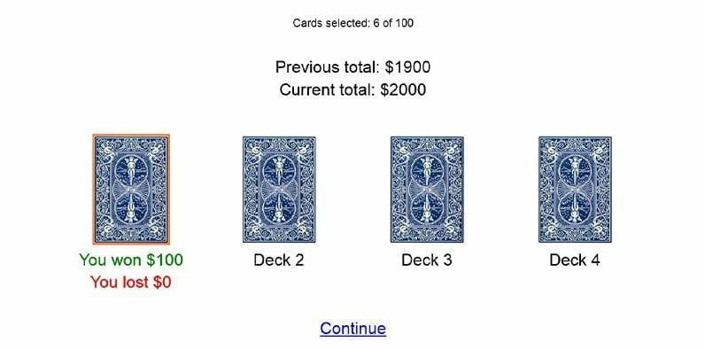

Introduction¶
Iowa Gambling Task¶
The Iowa Gambling Task (IGT) is a psychological task thought to simulate real-life decision making. In it, participants are presented with a number of decks of cards, and they have to chose one of the decks on each turn. The chosen deck will either reward or punish the participant with a varying amount of money. The goal of the game is to make as much money as possible over a number of turns.

Each deck has a different reward/punishment structure, for example varying in their average reward or amount of variation in the rewards. There are “bad” decks which lead the participant to lose money over time, and “good” decks which reward money over time. The way in which participants play this game can be used as a proxy to measure many psychological attributes of them.
The cards used in this dataset are as follows:
Deck |
A |
B |
C |
D |
|---|---|---|---|---|
Reward/trial |
100 |
100 |
50 |
50 |
Number of losses/10 cards |
5 |
1 |
5 |
1 |
Loss/10 cards |
-1250 |
-1250 |
-250 |
-250 |
Net outcome/10 cards |
-250 |
-250 |
250 |
250 |
Dataset¶
The dataset used in our analysis consists of reinforcement learning models fit to individual participants of the task. The Outcome Representation Learning (ORL) model was used to model each participant’s behaviour in the task, and represented using 5 parameters: A+, A-, K, \(\beta_F\), \(\beta_P\). These parameters are described in more detail in the Data Exploration section. There were 153 individuals in the dataset, split into young (aged 18-34, n=90) and old (aged 65-88, n=63) groups.
Analysis¶
We use two clustering methods to analyse the data: K-Means and Hierarchical Agglomerate Clustering. We also evaluate these two approaches to find the optimal number of clusters.
Additionaly, we look at the distributions of the model parameters in the dataset, and attempt to generate new synthetic data.